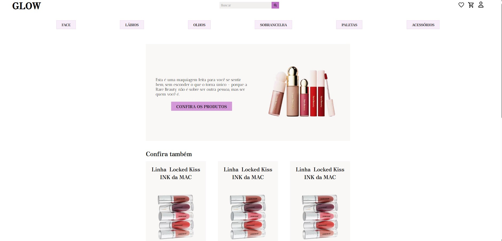

Explorando a teoria na prática!
Aqui você encontrará projetos acadêmicos que traduzem conceitos em soluções reais. Cada trabalho representa um capítulo da minha jornada em ciência e engenharia, aplicando conhecimento e aprimorando habilidades. Navegue pelos resultados do meu estudo e dedicação.
Projeto 1: Artigo - ENFRENTANDO A CARÊNCIA TECNOLÓGICA PARA ALCANÇAR UM DESENVOLVIMENTO INDUSTRIAL LIMPO
Download do Artigo - PDFEste artigo foi elaborado por mim e meus colegas com a seguinte tese: "Enfrentando a Carência Tecnológica para Alcançar um Desenvolvimento Industrial Limpo". Realizamos uma pesquisa aprofundada em artigos previamente publicados e exploramos a trajetória da Natura, uma empresa que integra sustentabilidade e crescimento de marca ao agregar valor através de seu posicionamento.
Projeto 2: Protótipo de dispenser
A proposta busca minimizar erros de medicação, reduzir desperdícios, melhorar a rastreabilidade e o gerenciamento de estoque, além de aumentar a satisfação dos pacientes por meio de um atendimento personalizado e pontual. Com auxílio de um microcontrolador ESP32, células de carga, servo motor e um buzzer, faremos um dispotivo que atrelado a uma planilha excel será programdo para entrega de remédios de forma personalizada seguindo os horários corretos
Projeto 3: E-comerce
Neste projeto de e-commerce, eu fui a responsável por todo o back-end, utilizando Node.js, SQLite e Prisma. A integração com o front-end em React e o gerenciamento de conteúdo por meio do Prismic garantiram uma experiência de compra eficiente e escalável. Testes de API foram realizados com Insomnia, enquanto Beekeeper facilitou a manipulação do banco de dados.
